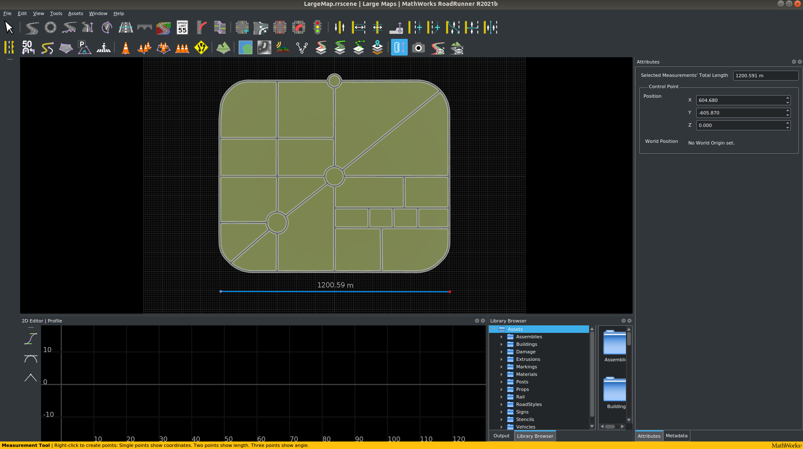
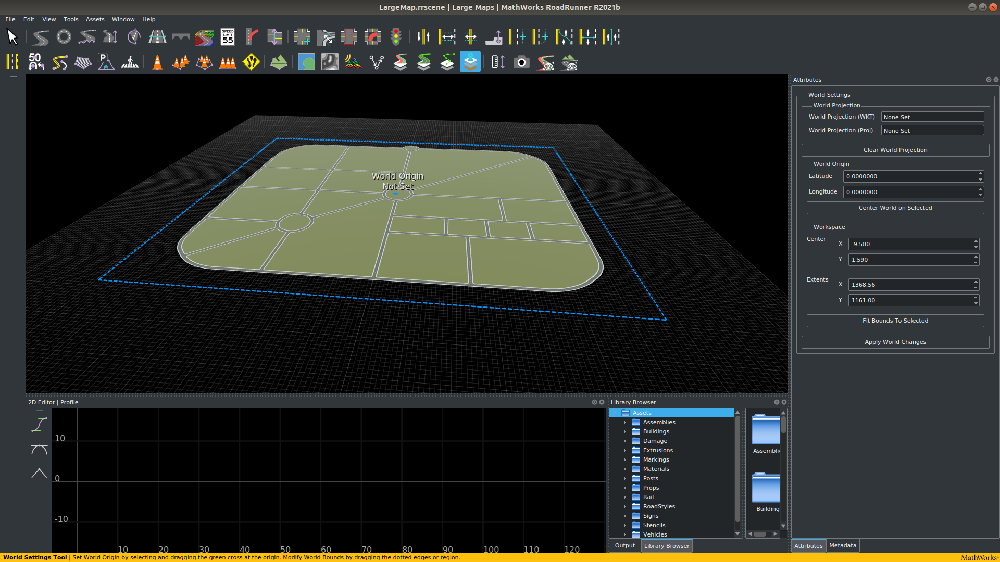
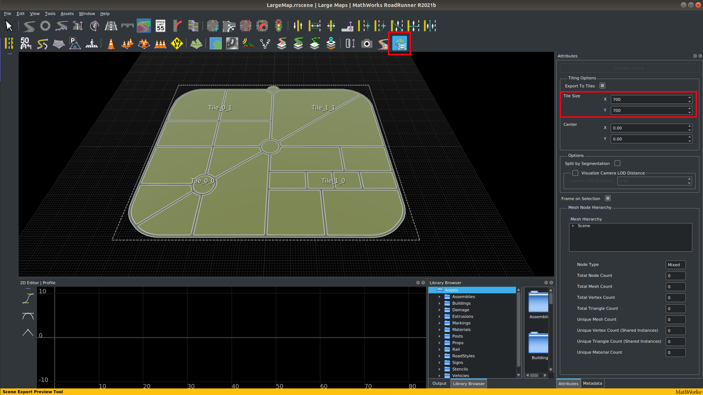
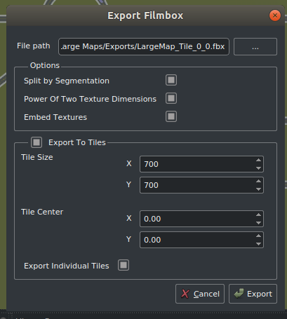
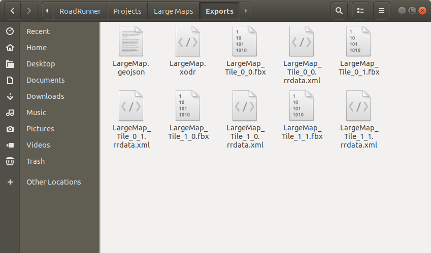
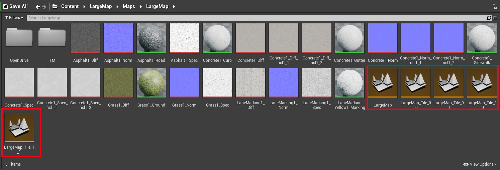
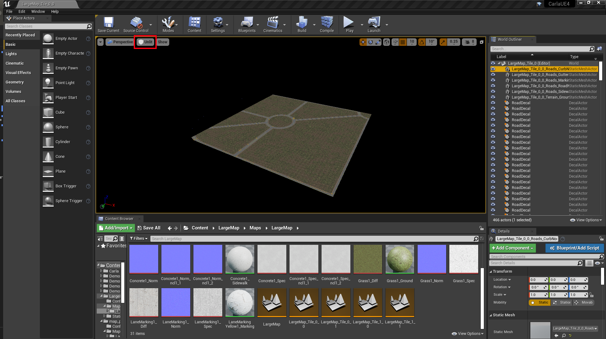

为 Carla 创建大地图¶
Carla 中大地图（如城镇 11 和 12）的操作方式与标准地图（如城镇 10）不同。地图被划分为图块，即地图的细分，通常大小设置为约 1 至 2 公里。这些图块划分了地图，以便仅将需要的地图部分加载到图形内存中以进行高效渲染。不需要的图块保持休眠状态并准备在需要时加载。通常，会加载自我车辆位置中的图块旁边的图块，但如果需要，可以加载更多图块。当 Carla 启动时，可以在设置中修改此行为。
在 RoadRunner 中创建大地图¶
RoadRunner 是推荐用于创建要导入 Carla 的大地图的软件。本指南概述了如何使用 RoadRunner 创建大地图以及如何在虚幻引擎编辑器中导入和处理大地图。
在 RoadRunner 中构建大地图¶
如何在 RoadRunner 中构建复杂地图的具体细节超出了本指南的范围，但是，RoadRunner 文档中提供了视频教程。从表面上看，在 RoadRunner 中构建大地图与构建标准地图基本相同，只是比例更大。差异主要在于地图的导出方式。

这里我们创建了一张大约 1.2 公里大小的大地图。当我们导出它时，它会被分割成图块，我们将选择 700m 的图块大小，因此地图应该分割成大约 4 个图块。
如果您正在构建带有高程的大地图，建议的地图最大尺寸为 20x20 km2。大于此大小的地图可能会导致 RoadRunner 在导出时崩溃。
在 RoadRunner 中导出大地图¶
以下是从 RoadRunner 导出自定义大地图的基本指南。
通过单击世界设置工具（World settings tool ）并拖动蓝色边界框的边缘以包含要导出的整个区域，确保选择导出完整地图。准备好后，单击“应用世界更改”（ Apply World Changes ）。

使用场景导出预览工具有助于了解如何将地图划分为图块以供导出。调整“平铺选项”（Tiling Options）菜单中的“平铺大小”（Tile Size）参数，找到适合您地图的平铺大小，按“刷新场景”（Refresh Scene）查看调整的影响。

!!! 笔记 Tile size: 您使用的图块大小是一个判断调用，以确保地图在 Carla 中使用时能够有效工作。如果您的地图包含密集的 3D 资源（例如建筑物和植被），您可能会受益于较小的图块大小，以防止加载不必要的资源。但是，这可能会增加构建地图所需工作的复杂性。Carla 引擎支持的最大瓦片尺寸为 2 公里，我们建议瓦片尺寸为 1 公里左右。
当您准备好导出时：
1. 导出 .fbx 几何文件：
- 在主工具栏中，选择
File->Export->Firebox (.fbx)
2. 在弹出的窗口中：
- 检查以下选项：
- 通过分段分割（Split by Segmentation）: 通过语义分割来划分网格并改进行人导航。
- 二维纹理的力量（Power of Two Texture Dimensions）: 提高性能。
- 嵌入纹理（Embed Textures）: 确保纹理嵌入到网格中。
- 导出到图块（Export to Tiles）: 选择图块的大小。Carla 可以使用的最大尺寸为 2000 x 2000。
- 导出单个图块（Export Individual Tiles）: 生成在 Carla 中流式传输大地图所需的单个图块。

3. 导出 .xodr OpenDrive 地图文件：
- 在主工具栏中，选择
File->Export->OpendDRIVE (.xodr)
在您选择导出的文件夹中，您现在将有几个新文件，一个 .xodr 文件和几个 .fbx 文件：

!!! 笔记
确保 .xodr 和 .fbx 文件具有相同的名称根。
现在您已经在 Roadrunner 中创建了大地图，您可以将其导入 Carla 中。RoadRunner 创建的文件应转移到用于构建 Carla 的根目录的 Import 目录内。
将大地图导入 Carla¶
RoadRunner 中生成的大地图可以导入到 Carla 的源代码构建中，并打包在 Carla 独立包中分发和使用。该过程与标准地图非常相似，只是添加了图块和批量导入的特定术语。
文件和文件夹¶
所有要导入的文件应放置在 Carla 根目录的 Import 文件夹中。这些文件应包括：
- 多个
.fbx文件中的地图网格代表地图的不同图块。 - OpenDRIVE 定义位于单个
.xodr文件中。
!!! 警告 您不能同时导入大地图和标准地图。
地图图块的命名约定非常重要。每个地图图块应根据以下约定命名：
<mapName>_Tile_<x-coordinate>_<y-coordinate>.fbx
默认情况下，RoadRunner 应符合此命名约定，但在准备导入 Carla 之前值得仔细检查，因为此阶段引起的问题稍后修复起来可能会很乏味。最终地图中的图块将如下图所示排列：

生成的Import文件夹中包含一个包含由四个图块组成的大地图的包，其结构应类似于以下结构：
Import
│
└── Package01
├── Package01.json
├── LargeMap_Tile_0_0.fbx
├── LargeMap_Tile_0_1.fbx
├── LargeMap_Tile_1_0.fbx
├── LargeMap_Tile_1_1.fbx
└── LargeMap.xodr
!!! 笔记
package.json文件并不是绝对必要的。如果未创建 package.json 文件，自动导入过程将创建一个。package.json在下一节中了解有关构建自己 package.json 的结构的更多信息。
创建 JSON 描述（可选）¶
.json描述是在导入过程中自动创建的，但也可以选择手动创建描述。现有.json描述将覆盖导入过程中作为参数传递的任何值。
该.json文件应创建在包的根文件夹中。文件名将是包分发名称。文件的内容描述了 地图 和 道具 的 JSON 数组，其中包含每个地图和道具的基本信息。
Maps 需要以下参数：
- name: 地图的名称。这必须与和
.fbx和.xodr文件相同.xodr。 - xodr:
.xodr文件的路径 - use_carla_materials: 如果为 True，地图将使用 Carla 材质。否则，它将使用 RoadRunner 材料。
- tile_size: 图块的大小。默认值为 2000 (2kmx2km)。
- tiles: 组成整个地图的
.fbxtile文件的列表。
Props 属于本教程的一部分。请参阅 本 教程了解如何添加新道具。
生成的.json文件应类似于以下内容：
{
"maps": [
{
"name": "LargeMap",
"xodr": "./LargeMap.xodr",
"use_carla_materials": true,
"tile_size": 700,
"tiles": [
"./LargeMap_Tile_0_0.fbx",
"./LargeMap_Tile_0_1.fbx",
"./LargeMap_Tile_1_0.fbx",
"./LargeMap_Tile_1_1.fbx"
]
}
],
"props": []
}
进行导入¶
将所有文件放入该Import文件夹后，在根 Carla 文件夹中运行以下命令：
make import
根据您的系统，虚幻引擎可能会消耗太多内存而无法一次导入所有文件。您可以通过运行以下命令选择批量导入文件：
make import ARGS="--batch-size=200"
该make import命令还存在两个标志：
--package=<package_name>指定包的名称。默认情况下，此项设置为map_package。两个包不能具有相同的名称，因此使用默认值将导致后续导入时出错。强烈建议更改包的名称。通过运行以下命令来使用此标志：
make import ARGS="--package=<package_name>"
--no-carla-materials指定您不想使用默认的 Carla 材质（道路纹理等）。您将改用 RoadRunner 材料。仅当您不提供自己的.json文件时才需要此标志。.json文件中的任何值都将覆盖此标志。通过运行以下命令来使用此标志：
make import ARGS="--no-carla-materials"
所有文件都将被导入并准备在虚幻编辑器中使用。地图包将在 Unreal/CarlaUE4/Content 中创建。将创建一个底图图块
!!! 笔记 目前不建议使用虚幻编辑器中为标准地图提供的自定义工具，例如道路画家、程序建筑等。
在虚幻编辑器中处理大地图¶
现在您已导入新地图，您将在内容浏览器中的默认命名 map_package 文件夹内找到该地图。如果您在导入命令中使用参数 "--package=<package_name>"，该文件夹将有一个备用名称。在此文件夹内，打开该Maps文件夹并打开该文件夹内的文件夹。在里面你会发现几个橙色的关卡文件。

整个地图将有一个关卡文件，而从 RoadRunner 导出的每个图块将有一个关卡文件。要将建筑物和植被等资产添加到地图中，请双击要处理的图块的关卡文件（例如本例中LargeMap_Tile_0_0），以便将其加载到编辑器中。默认情况下，图块没有任何照明设置，因此您可能需要将视图模式从 更改Lit为Unlit才能在加载图块后看到它。现在，您可以按照 与标准地图相同的过程 向地图添加详细信息，请确保保存对正在处理的图块所做的修改，然后加载下一个图块并重复该过程。您无法一次性处理整个地图，因此加载（通过双击）整个地图的关卡文件（后面不带后缀 的文件_Tile_X_Y）对于装饰地图将没有用处。

加载整个地图并运行模拟¶
如果您想加载地图并开始模拟进行实验，您应该加载整个地图的关卡文件。双击带有根地图名称的关卡文件（后面不带后缀的文件_Tile_X_Y）并等待其加载。对于非常大的地图，加载有时可能需要几秒钟甚至几分钟。加载后，单击虚幻编辑器工具栏中的播放选项。模拟现在将从您的新大地图开始。
!!! 笔记 如果您是第一次从虚幻引擎编辑器运行模拟，建议在开始模拟之前先逐个加载每个图块（通过双击它们），直到加载完所有图块。这会在后台执行某些操作，例如烘焙网格距离场和图块的着色器。如果您一开始不逐一加载图块，这些操作可能会在运行时执行，这可能会导致虚幻引擎挂起或崩溃。
打包一张大地图¶
要打包大地图以便可以在 Carla 独立包中使用，请遵循与标准地图相同的过程 - 运行以下命令：
make package ARGS="--packages=<mapPackage>"
这将创建一个压缩在.tar.gz文件中的独立包。Linux 下文件将保存在Dist 和 Windows下保存在 /Build/UE4Carla/ 文件夹中。然后可以将它们分发和打包以在独立的 Carla 包中使用。
如果您对大地图导入和打包过程有任何疑问，那么您可以在 论坛 中提问。